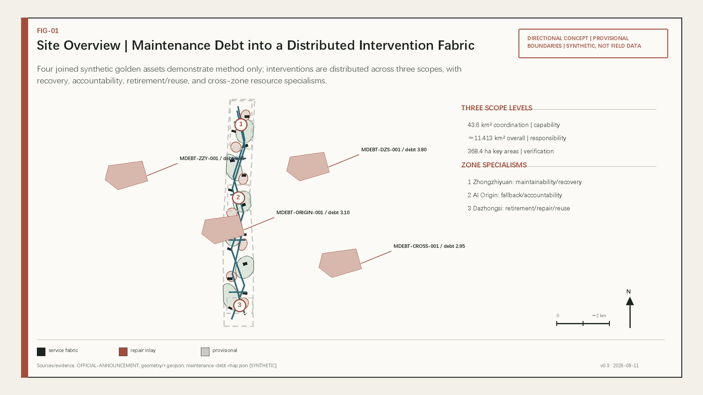
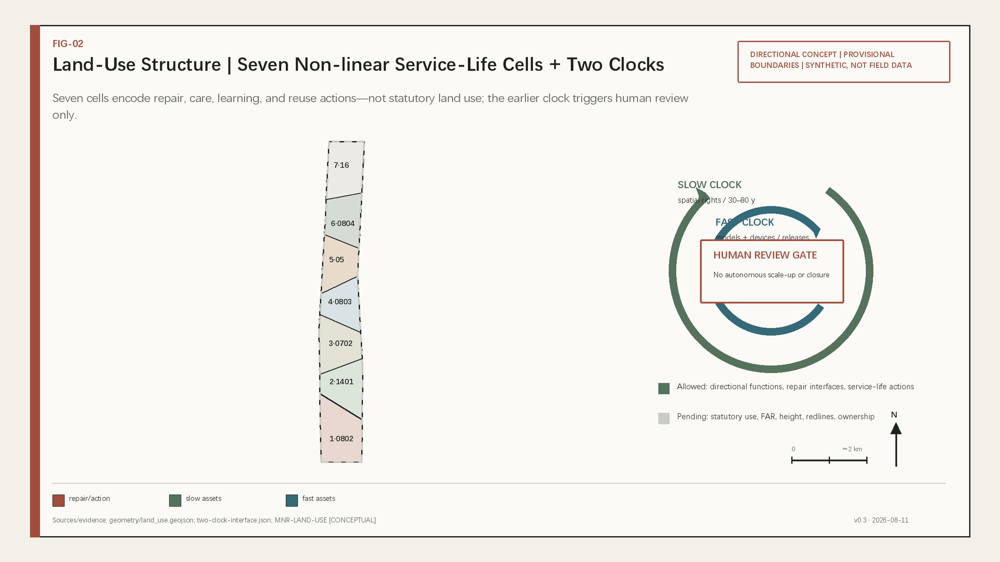
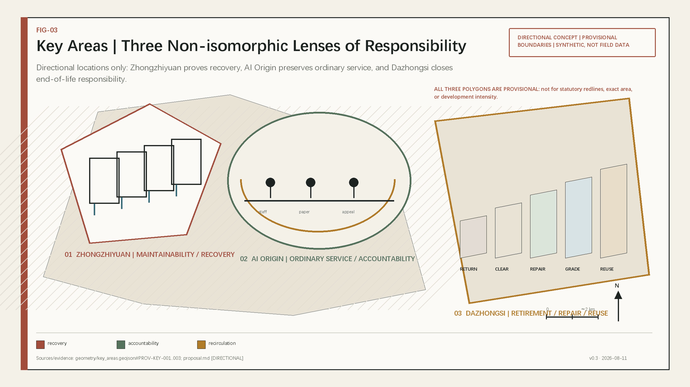
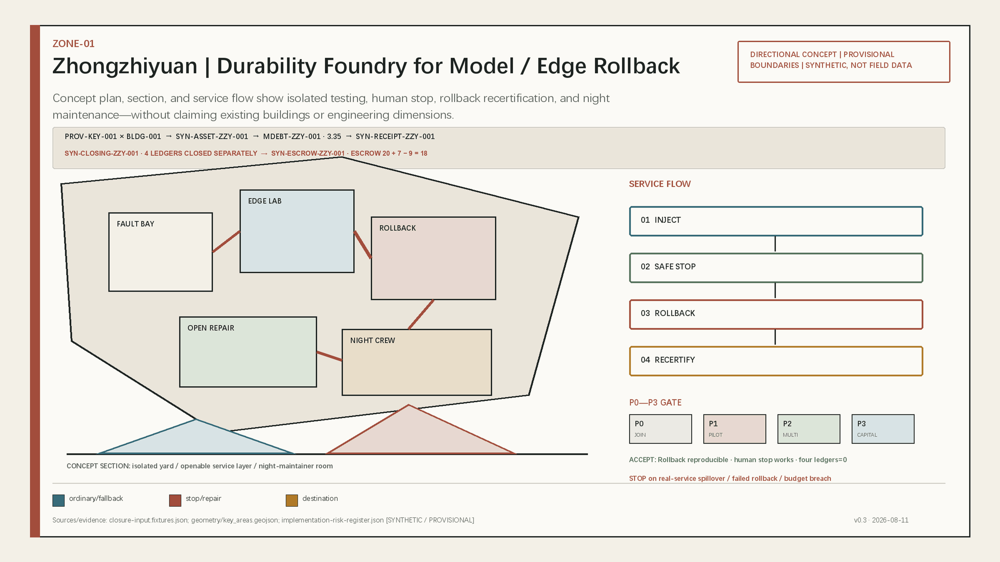
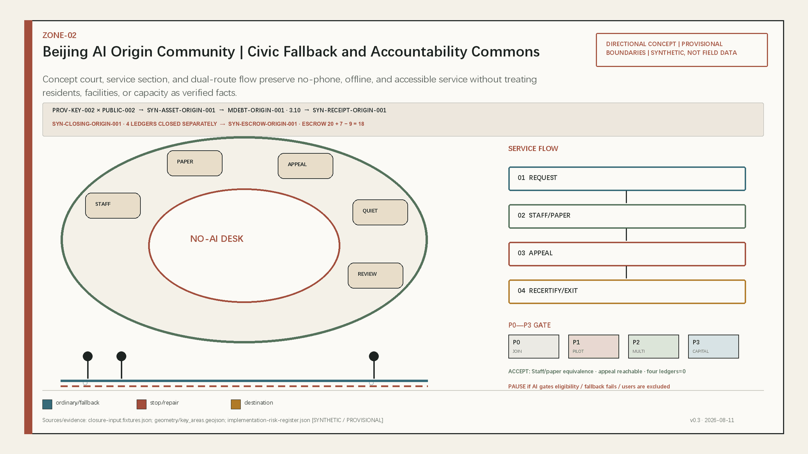
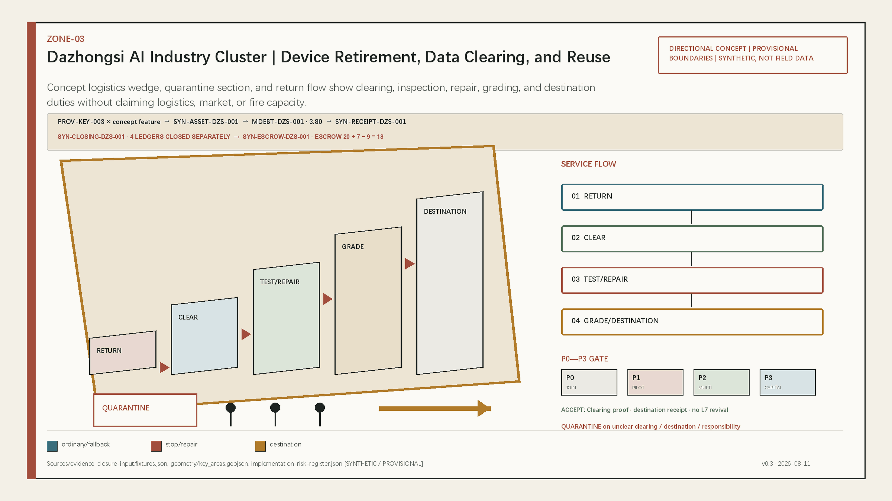
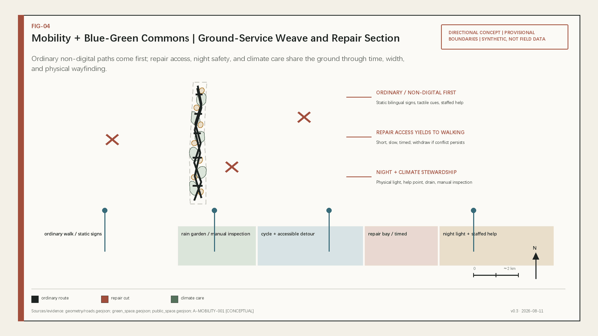
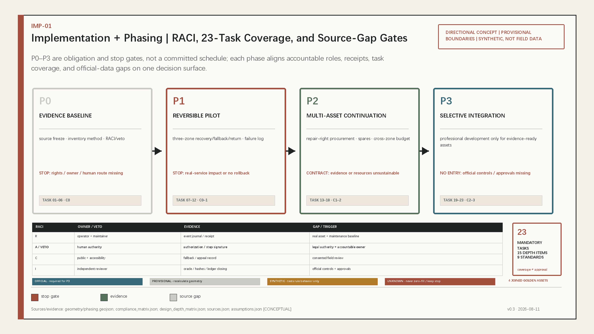
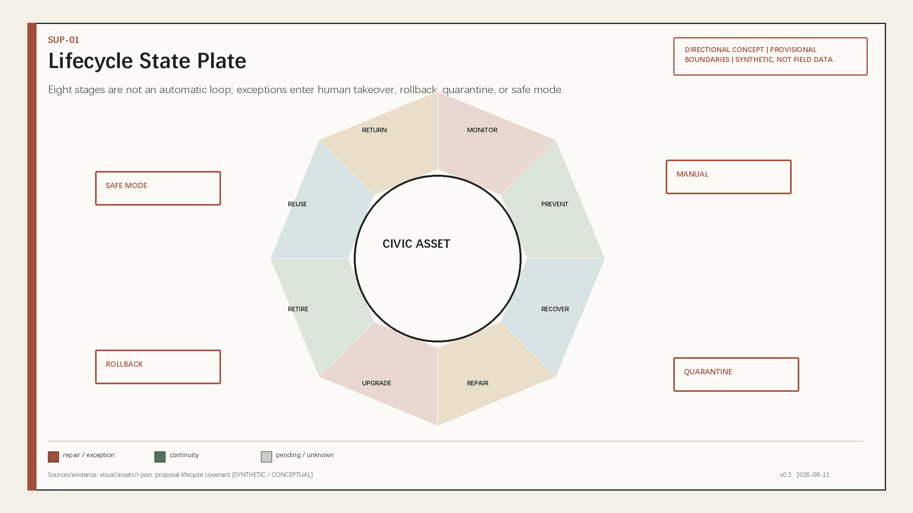
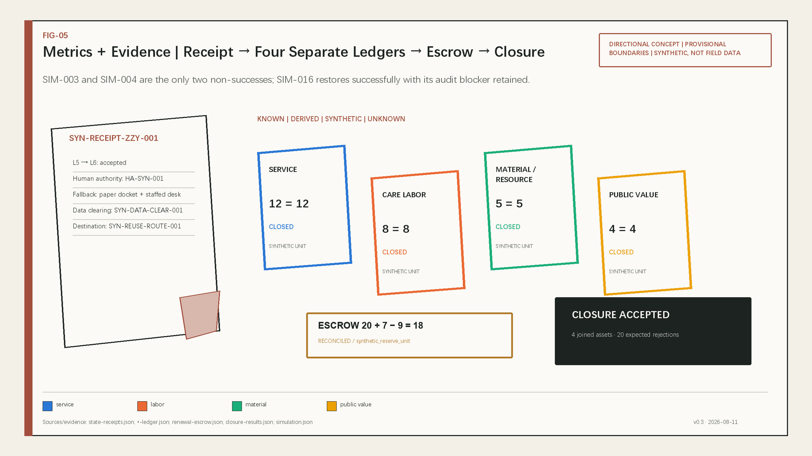

Zhongzhiyuan
Maintainability, fault injection, rollback, and recovery without spillover into real civic service.
A Public-Value Settlement System for Civic Assets
Renewal begins before replacement
Treat the city as a civic object continuously inspected, repaired, upgraded, handed over, and reused. Every seam records reason, responsibility, and evidence.
Directional concept design; not statutory planning, government approval, or field performance.
The synthetic maintenance-debt demonstration does not represent a field backlog; it only shows how inspection, repair, accessibility, and exit gaps generate distributed interventions.

Coordinated research, overall design, and key-area scopes answer different questions. Seven land-use cells encode service-life actions without statutory claims.

| Scope | Task | Boundary |
|---|---|---|
| 43.6 km² | Capability and case transfer | Textual task reference |
| ≈11.413 km² | Responsibility meets space and public | PROVISIONAL |
| 368.4 ha | Three responsibility tests | PROVISIONAL |
Maintainability, fault injection, rollback, and recovery without spillover into real civic service.
Staffed desk, paper receipt, ordinary service, and appeal review.
Data clearing, return, inspection, repair, grading, reuse, or responsible disposal.




Ordinary and non-digital routes work first; repair access, night lighting, climate care, and repairable building interfaces are layered in afterward.


All twelve AI scenarios require minimum data, human review, non-digital fallback, and exit conditions.

| ID | Action | Human/offline boundary |
|---|---|---|
| SC-03 | Dual-route duty service | Staff, paper, static wayfinding |
| SC-04 | Urban recovery drill | Safety officer may stop |
| SC-09 | Trusted data clearing | No recirculation without proof |
| SC-12 | Public return and appeal | Offline appeal, independent review |
12 = 12
CLOSED
8 = 8
CLOSED
5 = 5
CLOSED
4 = 4
CLOSED
The only two non-successes are SIM-003 schema_rejected and SIM-004 energy_budget_exceeded; SIM-016 restores successfully with an audit blocker retained, not a failed audit task.

Twenty-three mandatory tasks, fifteen depth items, and nine standards map to prose, layers, metrics, drawings, and checks.
Visual and PDF content-level builds are complete; package_state remains scaffold, with no persisted four gates, finalization, or formal-review claim.
OFFICIAL-ANNOUNCEMENT · AGENT-TASKBOOK · SOURCE-REGISTRY · geometry/*.geojson · metrics.json · simulation.json · visual/assets/*.json
Official polygons, controls, ownership, existing buildings, transport, utilities, heritage, real assets, and maintenance baselines remain unavailable; provisional, synthetic, and unknown states stay visible.
| Class | Allowed claim | Prohibited claim |
|---|---|---|
| KNOWN / DERIVED | Package recomputation | Statutory or field fact |
| SYNTHETIC | Rule behavior | Field effectiveness |
| UNKNOWN | Gap and trigger | Zero-fill |